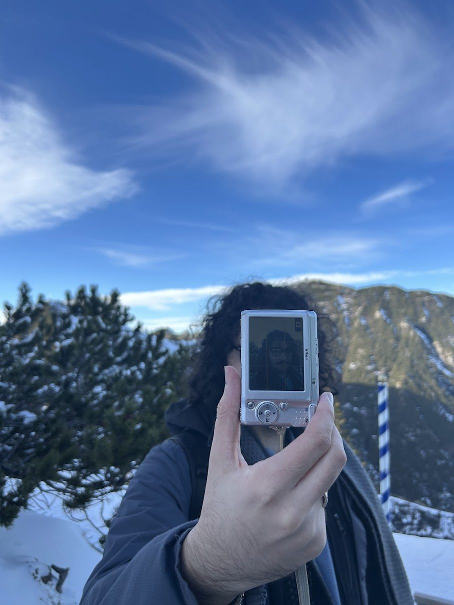
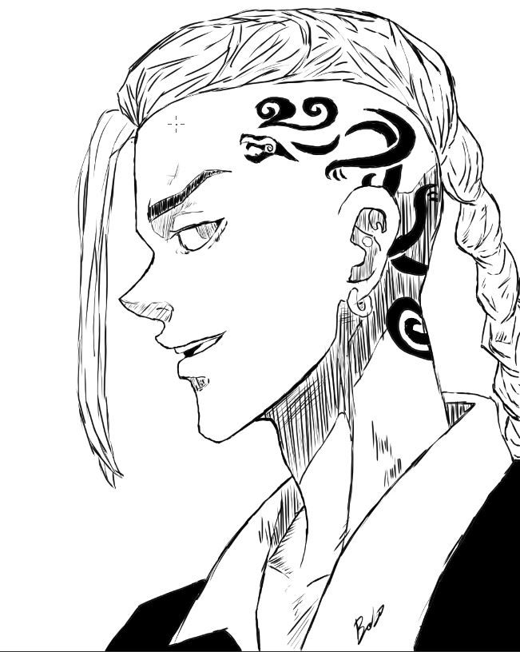
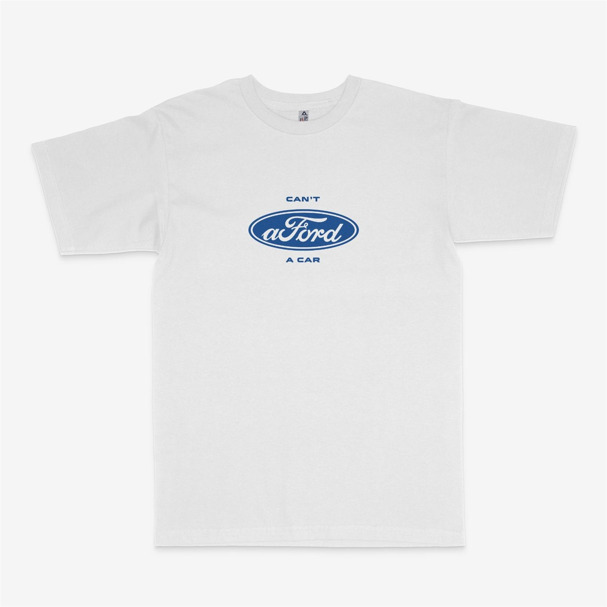

Merhaba, ben Barış. Hi, I’m Barış.
Ankara’da yaşayan bir tasarımcıyım. Mobil uygulama arayüzleri tasarlıyor, Unity ile oyun geliştiriyor ve fırsat buldukça çiziyorum. Hacettepe Üniversitesi Bilgisayar ve Öğretim Teknolojileri Eğitimi mezunuyum; şu an E12’de içerik geliştirme uzmanı olarak etkileşimli dersler hazırlıyorum.
I’m a designer based in Ankara. I design mobile app interfaces, build games in Unity and draw whenever I get the chance. I graduated in Computer Education and Instructional Technology from Hacettepe University, and I now create interactive lessons as a content development specialist at E12.

İşlerWork
ayrıntılar için birine tıkla click any project for the details

DefterdenFrom the sketchbook
işlerimin çoğu burada başlar most of my work starts here





Basılı işler ve yazılarPrint & writing
hepsi PDF olarak açılıreach one opens as a PDF
- katalogcatalog Vitaself Kiril alfabesiyle dizilmiş, baskıya hazır çok dilli ürün kataloğu. A print-ready, multilingual product catalog set in Cyrillic.
- katalogcatalog Hacettepe Akademik Gelişim ProgramıHacettepe Academic Development Programme Çok sayfalı eğitim kataloğu (2024). A multi-page course catalog (2024).
- raporlarreports Hacettepe STL dönem faaliyet raporlarıHacettepe STL semester reports Art arda dört dönemin raporlarını tasarladım: I designed the reports for four consecutive semesters: Güz 2022Fall 2022 Bahar 2023Spring 2023 Güz 2023Fall 2023 Bahar 2024Spring 2024
- senaryoscreenplay Senaryo örnekleriScreenwriting samples Kendi yazdığım sahnelerden bir seçki. A selection of scenes I wrote.
- kısa senaryoshort script Visa Vize bürokrasisi üzerine kısa bir senaryo. A short script about visa bureaucracy.
HakkımdaAbout

Hacettepe Üniversitesi’nde Bilgisayar ve Öğretim Teknolojileri Eğitimi okudum (2021–2025). Bu bölüm bana bir arayüzü tasarlarken, kullanıcının onu nasıl öğreneceğini de düşünmeyi öğretti. Bu yüzden işlerimin çoğu ya bir şey öğretiyor ya da kolayca öğrenilecek şekilde tasarlanıyor.
I studied Computer Education and Instructional Technology at Hacettepe University (2021–2025). It taught me to think about how people will learn an interface while I’m designing it, so most of my work either teaches something or is built to be easy to learn.
Son dönemde üretken yapay zekâ araçlarını da iş akışıma dahil ediyorum; özellikle senaryodan storyboard’a, oradan da videoya uzanan süreçte.
Lately I’ve been bringing generative AI tools into my workflow, especially on the way from script to storyboard to video.
KullandıklarımWhat I use
- ArayüzInterface
- Figma, Adobe XD, HTML/CSS/JS, WordPress
- Oyun, 3D ve kodGames, 3D & code
- Unity, C#, Python, Blender, Git
- Grafik ve videoGraphics & video
- Illustrator, Photoshop, InDesign, Lightroom, Premiere Pro
- E-öğrenme ve dokümantasyonE-learning & docs
- Articulate Storyline 360, Adobe Captivate, SCORM, S1000D, Oxygen XML
Nerelerde çalıştımWhere I’ve worked
- 2025 – bugün2025 – now E12 İçerik geliştirme uzmanı. Articulate Storyline 360 ile LGS ve YKS’ye yönelik etkileşimli e-öğrenme modülleri hazırlıyorum; senaryo ve storyboard aşamasında üretken yapay zekâdan yararlanıyor, ders çekimlerinde stüdyo ve kamerayı yönetiyorum. Content development specialist. I build interactive e-learning modules for the LGS and YKS exam curricula in Articulate Storyline 360, use generative AI for scripts and storyboards, and run the studio and cameras for lesson recordings.
- 2024 – 2025 BİLTEN 2024 yazında stajyer, ardından yarı zamanlı öğretim tasarımcısı. Eğitim videoları, S1000D uyumlu teknik dokümantasyon, eğitimlerde video çekimi ve şirket blogu için yazılar. Intern in summer 2024, then part-time instructional designer. Training videos, S1000D-compliant technical documentation, on-site video production and articles for the company blog.
- 2022 – 2024 Hacettepe STL Yarı zamanlı grafik tasarımcı. Dönem faaliyet raporları, AGP kataloğu, broşür ve afişler. Part-time graphic designer. Semester reports, the AGP catalog, brochures and posters.
- 2022 – 2023 Google Oyun ve Uygulama AkademisiGoogle Game & Application Academy Ekip olarak Unity ile 2D ve 3D oyun prototipleri geliştirdim; Google Proje Yönetimi eğitimini tamamladım. Built 2D and 3D game prototypes in Unity as part of a team, and completed Google’s Project Management training.
- 2022 – 2023 Hacettepe Kutu Oyunu Topluluğu (Knights)Hacettepe Board Game Club (Knights) Başkan. Düzenli buluşmalar ve turnuvalar organize ettim, kulübün görsel kimliğini tasarladım. President. Organised regular meetups and tournaments, and designed the club’s visual identity.
Sertifikalar ve eğitimlerCertificates & training
-
2023
Google Project Management
Google, Coursera üzerinden · 6 kurs sertifikasıGoogle, via Coursera · 6 course certificates
- Proje Yönetiminin TemelleriFoundations of Project Management
- Projeyi BaşlatmaProject Initiation
- Proje PlanlamasıProject Planning
- Projeyi YürütmeProject Execution
- Çevik Proje YönetimiAgile Project Management
- Bitirme Projesi: Gerçek Dünyada Proje YönetimiCapstone: Applying Project Management in the Real World
- 2023 Oyun ve Uygulama AkademisiGame and Application Academy Google, Girişimcilik Vakfı ve T3 Girişim Merkezi iş birliğiyleRun with Google, Girişimcilik Vakfı and T3 Girişim Merkezi
- Udemy Tasarım, video ve kodDesign, video & code 7 kurs, yaklaşık 150 saat7 courses, about 150 hours
- Anthropic Yapay zekâ okuryazarlığı ve ClaudeAI fluency & Claude 5 tamamlama sertifikası5 certificates of completion
- 2024 Drawing to Discuss Fransa’nın Châtenay-sur-Seine kasabasında, sanat ve sözsüz iletişim atölyeleri üzerine kurulu bir gençlik değişimi.A youth exchange in Châtenay-sur-Seine, France, built around art and non-verbal communication workshops.
Bana yazWrite to me
Arayüz tasarımı, oyun ve eğitim teknolojileri alanlarındaki projelere ve iş fırsatlarına açığım. Ankara’dayım; uzaktan da çalışabilirim.
I’m open to projects and roles in interface design, games and learning technology. I’m based in Ankara and happy to work remotely.